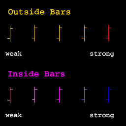
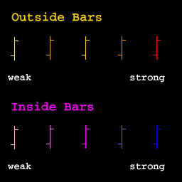
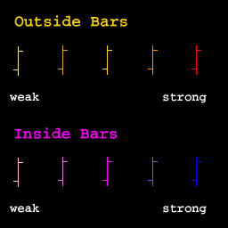

NOTE: This chart type is experimental. See notes below.
"Outside Bars" (yellow-to-red) - the trading range encompasses the previous bar. "Inside Bars" (pink-to-blue) - the trading range is encompassed by the previous bar.
May indicate short-term reversal. Must be accompanied by volume and preceded by a trend.
The outside bar at 20030313 is a classic. It is even more strong as it encompasses both previous bars and has a large body.

Colour is used to denote the significance of bars. A five-point ranking scheme is used as shown in the legend.
When an outside/inside bar is detected, it is assigned a default ranking of one point. For each other significance factor, half a point is added. The final rank is truncated to an integer between one and five.
Many factors contribute to significance. Here are the few that are currently being used.
Outside bars:
Inside bars:
You will need to apply more weight from your visual observations, e.g. a sharper preceding trend.
Not yet automatically detecting that there is associated volume. You must verify that visually.
Not yet automatically detecting that an up or down trend is in place. You must verify that visually.
The ranking scheme needs to be fine-tuned, e.g. perhaps more weight should be added to certain situations. Note that you can tweak these weights yourself in Plot.cpp (search for "Exhaustion or Rank").
More significance patterns need to be detected - currently only doing a few. (The maximum rank that can currently be achieved is three, i.e. you will not yet see any orange or red outside bars nor any blue inside bars.)
There are other price patterns that indicate exhaustion points, e.g. two-bar reversals, exhaustion bars. However we are only attempting outside and inside bars.